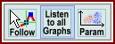
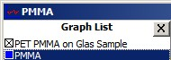

您可以使用图谱查看器环形菜单打开这些功能。

鼠标跟随数据：
如果勾选，光标始终跟随X和Y方向上的精确数据点。
监听所有图谱
如果勾选，所有多维图谱对象都将监听；即如果在同一查看器中显示两个图像图谱对象，并且您在图像查看器中点击另一个像素，图谱查看器将显示所有图谱数据对象在该位置的相应图谱/光谱。
您可以关闭此功能来比较多维图谱数据对象的特定单光谱。
参数显示
打开参数图。X轴由您激活参数显示时选定的图谱定义。因此只需停用参数显示，选择另一个图谱，然后再次激活它即可更改X轴图谱。
在图谱查看器列表中，参数显示中使用的X轴图谱由一个小十字标记：
